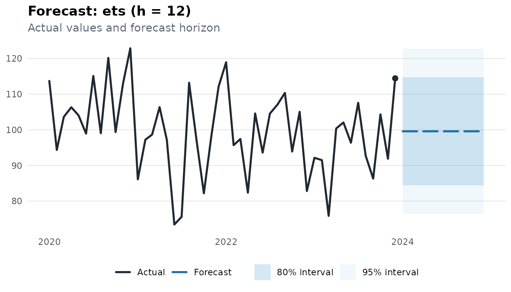

library(milt)
#> milt 0.1.0 — Modern Integrated Library for Timeseries
#> Use `list_milt_models()` to see available models.Overview
milt handles multi-series data natively. A grouped
MiltSeries stores multiple series in a single object, and
milt_local_model() fits one model per series in
parallel.
1. Creating a multi-series MiltSeries
# Build a synthetic dataset with 3 stores
set.seed(42)
n <- 48L
tbl <- tibble::tibble(
date = rep(seq(as.Date("2020-01-01"), by = "month", length.out = n), 3),
store = rep(c("A", "B", "C"), each = n),
sales = c(
rnorm(n, 100, 10),
rnorm(n, 200, 20),
rnorm(n, 150, 15)
)
)
ms <- milt_series(tbl,
time_col = "date",
value_cols = "sales",
group_col = "store")
print(ms)
#> # A MiltSeries: 48 x 1 [monthly] | 3 series
#> # Time range : 2020 Jan — 2023 Dec
#> # Components : sales
#> # Groups : store (3 series)
#> # Gaps : none
#> # A tibble: 6 × 3
#> date store sales
#> <date> <chr> <dbl>
#> 1 2020-01-01 A 114.
#> 2 2020-02-01 A 94.4
#> 3 2020-03-01 A 104.
#> 4 2020-04-01 A 106.
#> 5 2020-05-01 A 104.
#> 6 2020-06-01 A 98.9
#> # … with 138 more rows3. Local models — one per series
milt_local_model() wraps any model to train
independently on each group:
local_m <- milt_local_model(milt_model("ets"))
fitted <- milt_fit(local_m, ms)
#> Fitting <MiltLocalModel> model…
#> Local model: fitting 3 groups…
#> Done in 1.71s.
fct <- milt_forecast(fitted, 12)
#> Local model: generating forecasts for 3 groups.
print(fct)
#> # A MiltForecast <ets>: horizon = 12# Forecast from: 2023-12-01# Intervals : 80, 95%#
#> # A tibble: 6 × 7
#> time .model .mean .lower_80 .upper_80 .lower_95 .upper_95
#> <date> <chr> <dbl> <dbl> <dbl> <dbl> <dbl>
#> 1 2024-01-01 ets 99.6 84.4 115. 76.4 123.
#> 2 2024-02-01 ets 99.6 84.4 115. 76.4 123.
#> 3 2024-03-01 ets 99.6 84.4 115. 76.4 123.
#> 4 2024-04-01 ets 99.6 84.4 115. 76.4 123.
#> 5 2024-05-01 ets 99.6 84.4 115. 76.4 123.
#> 6 2024-06-01 ets 99.6 84.4 115. 76.4 123.
#> # … with 6 more rows
plot(fct)
4. Split and manipulate individual series
# Extract one group by filtering the underlying tibble
s_A <- milt_series(
dplyr::filter(ms$as_tibble(), store == "A"),
time_col = "date",
value_cols = "sales"
)
spl <- milt_split(s_A, ratio = 0.8)
cat("Train:", spl$train$n_timesteps(), "Test:", spl$test$n_timesteps(), "\n")
#> Train: 38 Test: 105. Concatenate series
s1 <- milt_series(AirPassengers)[1:72]
s2 <- milt_series(AirPassengers)[73:144]
s_full <- milt_concat(s1, s2)
cat("Combined length:", s_full$n_timesteps(), "\n")
#> Combined length: 1446. Time series clustering
Group series by shape similarity:
# Create a list of separate MiltSeries for clustering
series_list <- lapply(c("A", "B", "C"), function(g) {
milt_window(ms, group = g)
})
cl <- milt_cluster(series_list, k = 2L, method = "feature_based")
print(cl)
#> # MiltClusters [feature_based]
#> # Series: 3 Clusters: 2# Cluster sizes:
#>
#> 1 2
#> 2 17. Time series classification
Train a classifier on labelled series:
# Assign synthetic labels
labels <- c("high", "high", "low") # stores A, B, C
clf <- milt_classifier("feature_based")
milt_classify_fit(clf, series_list, labels)
pred <- milt_classify_predict(clf, series_list)
cat("Predicted labels:", pred$labels, "\n")
#> Predicted labels: high high high8. Hierarchical reconciliation
Ensure aggregate forecasts are coherent with bottom-level sums:
# Fit models for Total + each store
s_total <- milt_series(
tibble::tibble(
date = seq(as.Date("2020-01-01"), by = "month", length.out = n),
sales = tbl$sales[tbl$store == "A"] +
tbl$sales[tbl$store == "B"] +
tbl$sales[tbl$store == "C"]
),
time_col = "date", value_cols = "sales"
)
fc_total <- milt_model("ets") |> milt_fit(s_total) |> milt_forecast(6)
#> Fitting <MiltEts> model…
#> Done in 0.5s.
fc_A <- milt_model("ets") |> milt_fit(series_list[[1L]]) |> milt_forecast(6)
#> Fitting <MiltEts> model…
#> Done in 0.56s.
fc_B <- milt_model("ets") |> milt_fit(series_list[[2L]]) |> milt_forecast(6)
#> Fitting <MiltEts> model…
#> Done in 0.51s.
fc_C <- milt_model("ets") |> milt_fit(series_list[[3L]]) |> milt_forecast(6)
#> Fitting <MiltEts> model…
#> Done in 0.47s.
# Summing matrix (Total = A + B + C)
S <- matrix(c(1,1,1, 1,0,0, 0,1,0, 0,0,1),
nrow = 4, ncol = 3, byrow = TRUE,
dimnames = list(c("Total","A","B","C"), c("A","B","C")))
rc <- milt_reconcile(
list(Total = fc_total, A = fc_A, B = fc_B, C = fc_C),
S = S,
method = "ols"
)
print(rc)
#> # MiltReconciliation [ols]
#> # Series: Total, A, B, C